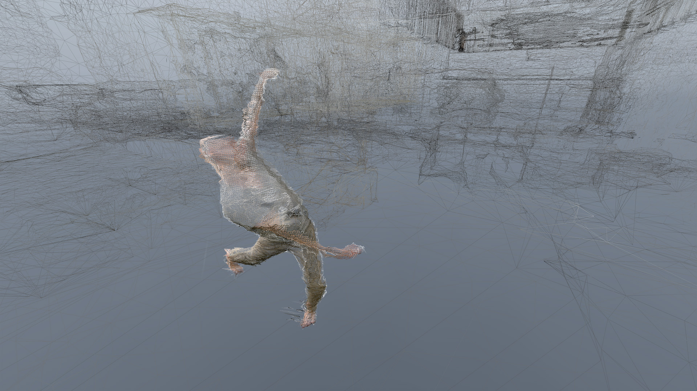
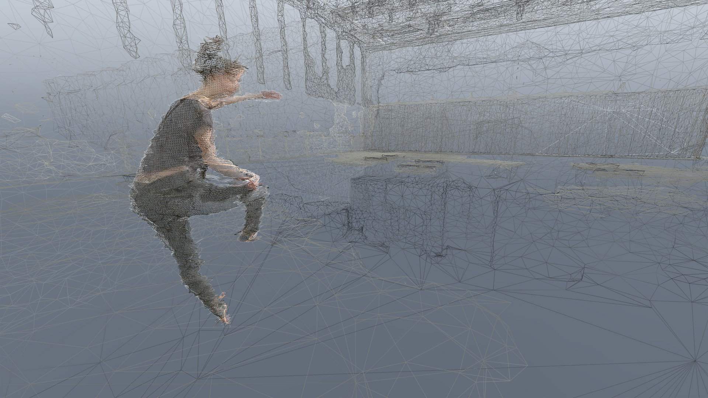
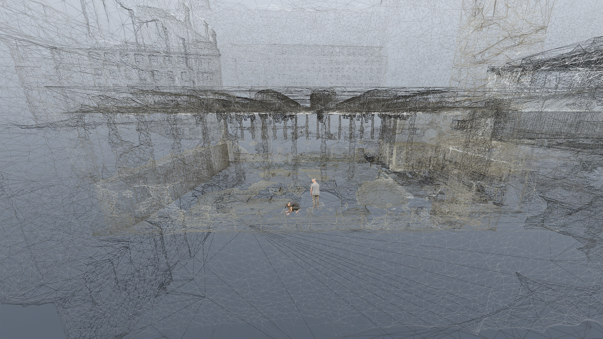

Dust
Mária Júdová, Andrej Boleslavský and Miles Whittaker
- 
- 
- 
Click to Experience
Description
Dust is an immersive, virtual reality experience that aims to transform the way people see and experience contemporary dance. It is an innovative project exploring new forms of engaging the audience and creating the narratives through the creative partnership between performing arts and new media.
The piece is inspired the fact that every element on Earth was formed at the heart of a stardust, so our bodies were. Drawing inspiration from these eternal particles being part of our bodies just for incredibly short moment, as well as the motif of the unthinkable world expressed by book of philosophy In the Dust Of This Planet by Eugene Thacker, Dust seeks to reimagine our perception of body, space and time with the use of digital technologies
It immerses the audience in a virtual reality environment which has been created by volumetric capturing. The audience uses virtual reality (VR) headsets to place themselves in the immediate presence of the dancer and within a unique visual and aural scenario. The resulting effect is exhilarating, allowing the audience to experience the work from different perspectives and within the space where the dance is happening. Dust is a demonstration of what dance, performance, film and sound could become in the future of VR.
Dust is an installation for room-scale VR accompanied by a preview interactive website supporting WebVR. Website preview version of the experience was made with Three.js and our custom toolsets for recording and converting the volumetric video stream. We published part of the tool as an open-source.
Dust was been produced by Carmen Salas with the support of the Arts Council of England. Music for the project was produced by Miles Whittaker from Demdike Stare.
Bios
Mária Júdová and Andrej Boleslavský are Prague-based independent artists and who been investigating the creative potential of technology for over a decade. Their work combines the exploration of technologically informed dance practices with participatory performances, body movement, time and space. They are interested in applying the choreographic thinking to practice of digital artists and vice versa, as they believe that it leads to the creation of richer and more meaningful experiences. Therefore they often find themselves in close collaboration with performers, dancers and choreographers, trying to understand better the principles behind the creation of the movement as well as sharing our own creative practices. Miles Whittaker is one of the foremost figures in British experimental electronic music of the early 21st century. Operating solo under a slew of aliases and as a member of the cult acts Pendle Coven and Demdike Stare, he produced some of the most intriguing and forward-thinking sounds around, drawing on his deep love of electronic music in all its forms. Whittaker was first exposed to dance music through attending club nights and illegal raves as a teenager in and around the small town near Manchester where he grew up.
Requirements
| Edge | Chrome | Chromium | Firefox | Firefox Nightly | Safari | |
|---|---|---|---|---|---|---|
| Desktop (360) | ✔ | ✔ | ✔ | ✔ | ✔ | ✔ |
| Google Cardboard | ✔ | ✔ | ✔ | |||
| Oculus Rift | ✔(Windows) | ✔(Windows) | ||||
| HTC Vive | ✔(Windows) | ✔(Windows) |
Note: Viewing content in 360-degrees on your Desktop or using a mobile device with Google Cardboard does not usually require any special browser setup. For instructions on how to setup your browser to work with a VR headset like the Oculus Rift or HTC Vive click on the browser name above. The Samsung Gear VR and Google Daydream are also good choices for experiencing WebVR. If the piece works on Google Carboard it is likely to work on these as well.